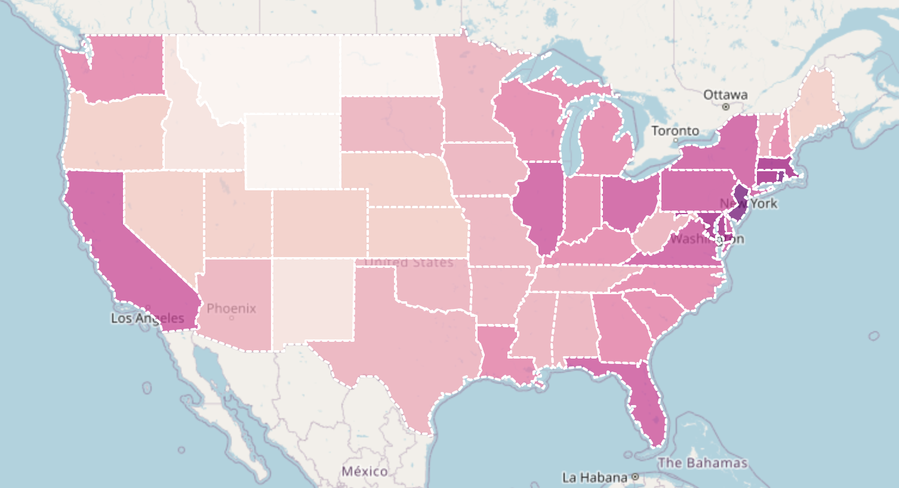
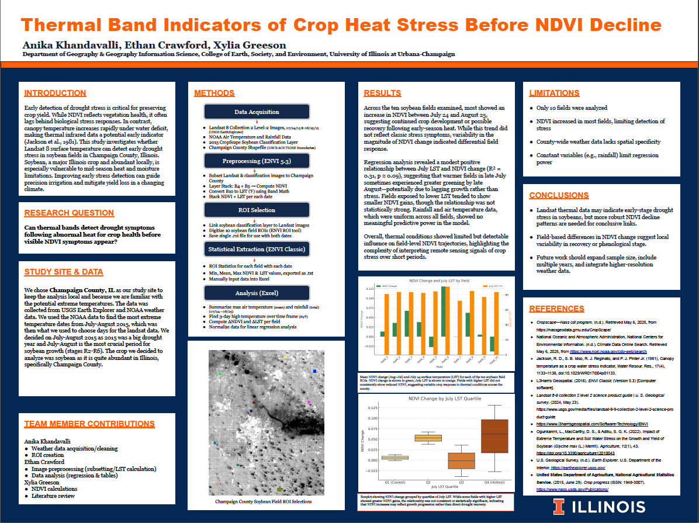
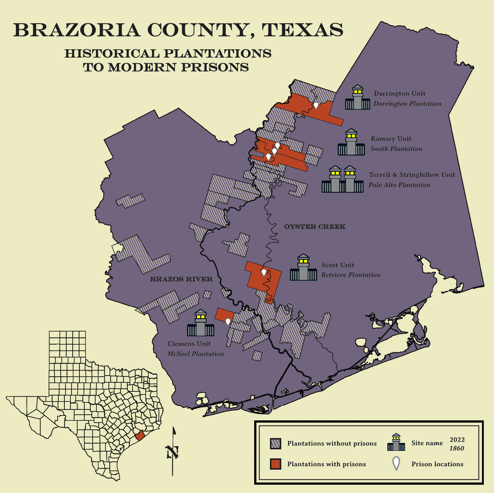
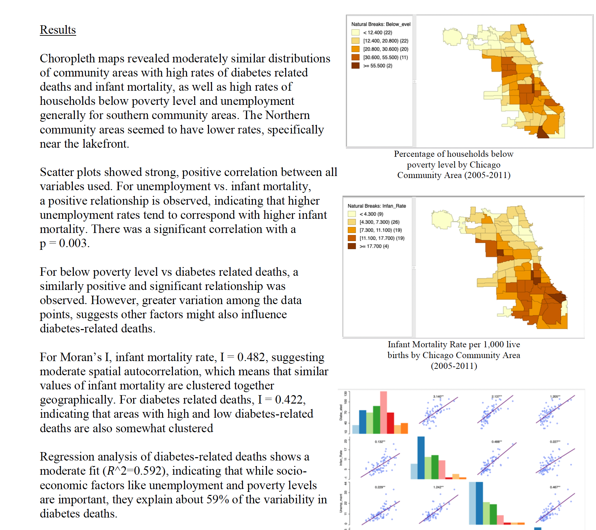

Maps & Spatial Analysis
A collection of my GIS projects, web maps, and urban planning visualizations.

Interactive LeafletUS Population Density
An interactive choropleth map showing population density using US Census Bureau data.
 ArcGIS StoryMap
ArcGIS StoryMap
The Segregated Capital of Santiago
An interactive narrative exploring spatial division and urban planning in Chile's capital.

Remote SensingThermal Band Indicators of Crop Heat Stress Before NDVI Decline
Spatial analysis of thermal imagery to identify pre-NDVI decline crop heat stress.

CartographyBrazoria County: Historical Plantations to Modern Prisons
A cartographic layout mapping the geographic overlap between 19th-century cotton plantations and modern Texas prison units.

Spatial AnalysisSocio-Economic Factors & Health Outcomes in Chicago
Choropleth mapping and spatial autocorrelation of poverty, unemployment, and health outcomes across Chicago community areas.